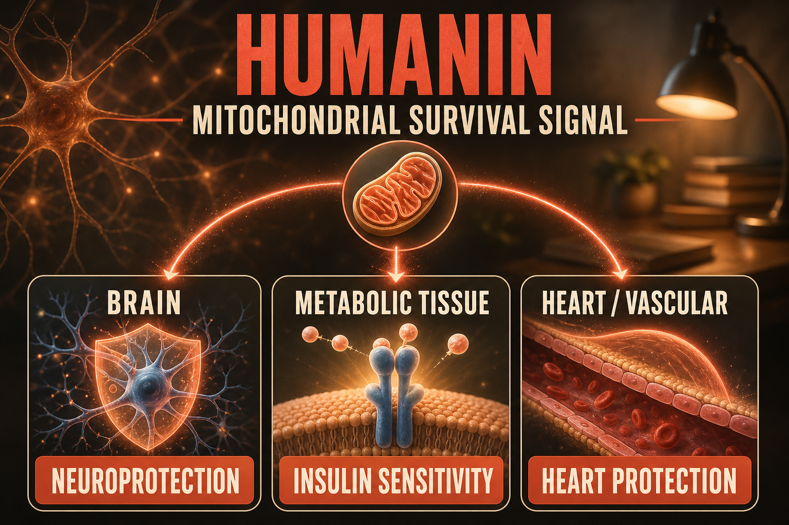

What Humanin Is
Humanin is a 24-amino-acid peptide encoded within the mitochondrial genome - specifically in the 16S rRNA gene - discovered in 2001 by Dr. Ikuo Nishimoto. The name comes from its original discovery context: it was identified for its ability to protect human neurons from the cell death caused by Alzheimer's-related stimuli. The discovery that a functional peptide was encoded within mitochondrial DNA was itself a significant scientific finding, as mitochondrial DNA was not previously known to encode peptides beyond respiratory chain components.
Humanin belongs to a class of mitochondria-derived peptides (MDPs) that includes MOTS-c. Like MOTS-c, Humanin is produced naturally but declines with age. Unlike MOTS-c which primarily activates AMPK and metabolic efficiency pathways, Humanin's primary documented effects involve neuroprotection, insulin sensitization, and cardiovascular protection through distinct signaling pathways - primarily STAT3 activation and IAP (inhibitor of apoptosis protein) interactions.
Humanin and its synthetic analogs (particularly HNG - Humanin-G, a more potent derivative with a serine-to-glycine substitution) have been studied in animal models of Alzheimer's disease, cardiovascular disease, diabetes, and aging. Human data remains limited but the mechanistic research is among the most developed for any mitochondria-derived peptide.
Plain English Version
The Cellular Survival Signal From Your Own Mitochondria
When your cells face stress - the kind of stress that comes from Alzheimer-related protein accumulation, insulin resistance, cardiovascular pressure, or just decades of metabolic demands - they need to decide: adapt and survive, or shut down and die. That decision is made through intracellular signaling pathways that weigh the scale of damage against the cell's resources for repair.
Humanin is a signal that tips the scale toward survival. It is produced by your own mitochondria - the energy generators inside your cells - and it works by activating pathways that protect cells from apoptosis (programmed cell death). In neural tissue this protection is particularly relevant because neurons, unlike most cells, cannot be replaced. The Alzheimer-related neurodegeneration that Humanin was originally discovered to protect against is driven partly by excessive neuronal apoptosis.
But Humanin's survival signaling is not brain-specific. The same pathways it activates for neuronal protection also improve insulin sensitivity in metabolic tissue and provide cardiovascular protection in cardiac tissue. It is a systemic cellular survival signal that becomes less available as age reduces mitochondrial output and the mitochondrial peptide production that comes with it.
One sentence: Humanin is a mitochondria-encoded survival signal that protects neurons, improves insulin sensitivity, and supports cardiovascular function - declining with age as mitochondrial output reduces.
How To Picture It

How It Works
Humanin activates STAT3 (Signal Transducer and Activator of Transcription 3) signaling, which drives anti-apoptotic gene expression. It also modulates Bax (a pro-apoptotic protein) interaction with mitochondrial membranes, reducing apoptosis initiation. Independent of STAT3, Humanin improves insulin receptor sensitivity through pathways that overlap with but are distinct from MOTS-c's AMPK mechanism. Its cardiovascular protection appears mediated through endothelial protection and reduced foam cell formation in atherosclerotic models.
Documented Benefits
protection against Alzheimer-related neuronal apoptosis in cell and animal models
distinct from but complementary to MOTS-c mechanism
endothelial protection and anti-atherosclerotic effects in animal models
animal model evidence for age-related cognitive decline reduction
Dosing Protocol
Community research protocols use either Humanin or HNG (Humanin-G, the more potent synthetic analog).
| Protocol | Dose | Frequency | Route | Notes |
|---|---|---|---|---|
| Starting Humanin | 2mg | Daily | SubQ | Standard research starting dose |
| Standard Humanin | 2-5mg | Daily | SubQ | Most documented range |
| HNG (more potent) | 100-500mcg | Daily | SubQ | HNG is ~1000x more potent than Humanin |
Reconstitution Standard
HM (2mg vial) + 1ml BAC water = 2mg/ml 2mg dose = 100 units | For HNG: HNG (1mg vial) + 1ml BAC = 1mg/ml; 100mcg = 10 units
Dosage Build-Up Timeline
- Week 1-2: 2mg Humanin daily - establish tolerance
- Week 3-8: 2-5mg daily - standard protocol
- Week 9-12: Reassess; evaluate cognitive clarity, energy, and metabolic markers
- Week 13-16: 4-week reduced dose period
- Repeat
Common Mistakes
both are mitochondria-derived peptides from the same gene family but with distinct mechanisms and primary applications
HNG is approximately 1000x more potent per unit mass; dose conversions are not 1:1
Humanin's neuroprotection is protective rather than acutely cognitive-enhancing; longer time horizons
human data for Humanin is limited; appropriate epistemic humility required
Contraindications And Cautions
insufficient data
STAT3 activation has dual roles in cancer biology; discuss with oncologist
Humanin improves insulin sensitivity and could produce additive hypoglycemic effects
What To Track
- Cognitive clarity and focus weekly (subjective)
- Fasting glucose and insulin sensitivity markers
- Energy levels subjective 1-10 weekly
- Any mood or motivation changes
Stacks Well With
- MOTS-c - complementary mitochondrial peptides; MOTS-c activates AMPK metabolic efficiency, Humanin activates STAT3 neuroprotection; cover different aspects of the same aging physiology
- SS-31 - three mitochondrial peptides covering energy efficiency (SS-31), metabolic efficiency (MOTS-c), and cellular survival signaling (Humanin)
- NAD+ - fuel substrate alongside the mitochondrial peptide stack
Sources
- Peptibase Humanin profile 2026. peptibase.dev
- Nishimoto I et al. Humanin discovery Alzheimer neuroprotection. PNAS 2001. pubmed.ncbi.nlm.nih.gov
- Cohen P et al. Humanin insulin sensitivity cardiovascular. Cell Metabolism. pubmed.ncbi.nlm.nih.gov
- PubMed: Humanin mitochondria-derived peptide aging. pubmed.ncbi.nlm.nih.gov
For educational and research documentation purposes only. Not medical advice. Always speak with a qualified healthcare professional before making health decisions.